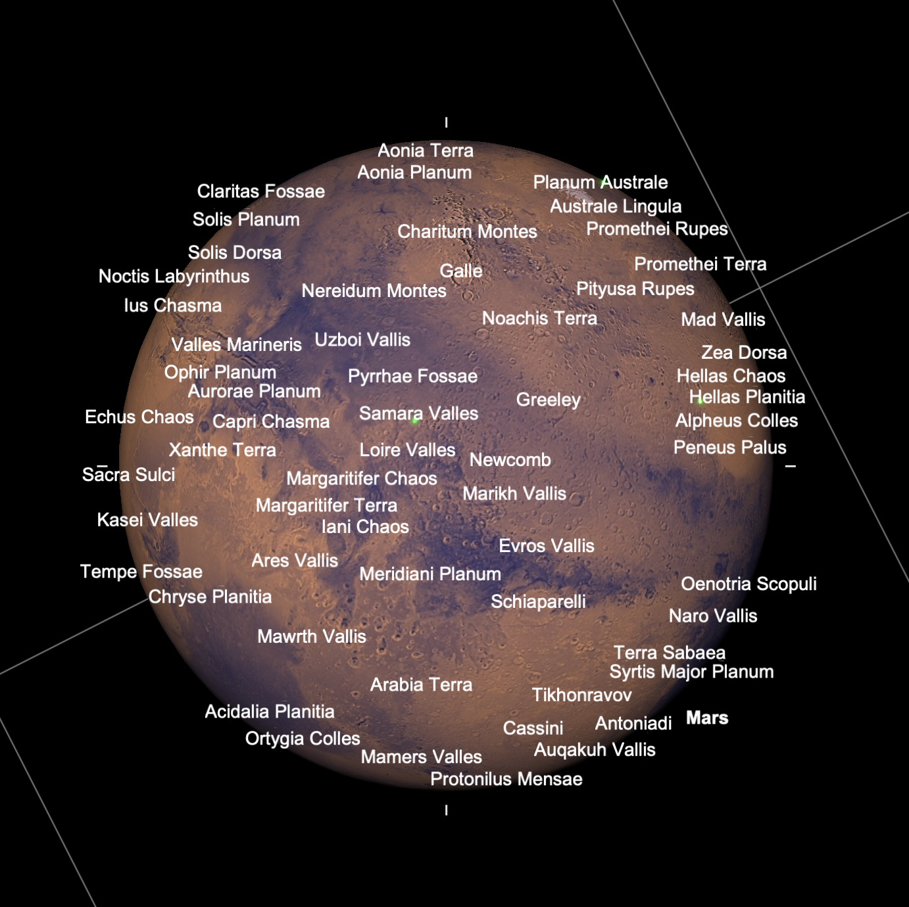
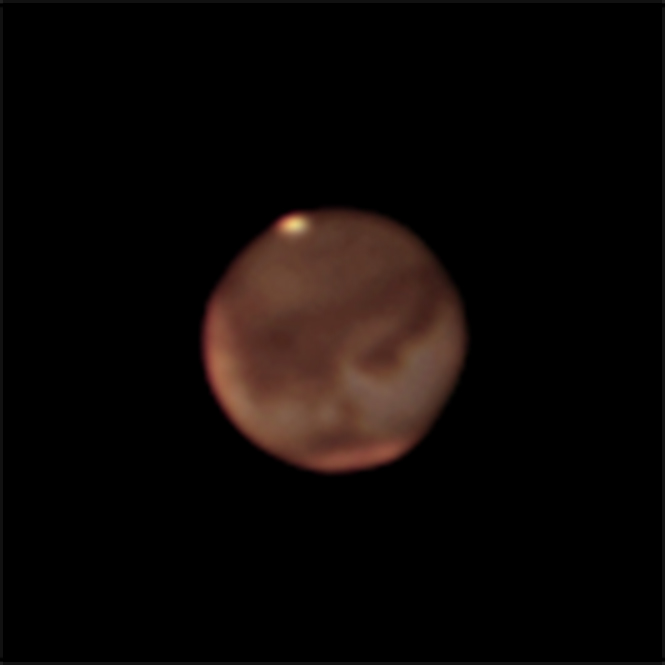

Mars is now making its closest approach to Earth. It turns out that this opposition of Mars will be the closest for a while due to the two planets' elliptical orbits, so this will be as big as Mars gets (as seen from Earth) for quite some time. We won't have a viewing opportunity as good as this again until the 2030s!
I definitely wanted to take advantage of closest approach, but I had work on Tuesday night which would keep me from observing, so I headed out for a Mars focussed observing session on the night of Oct 5.
I tried my usual strategy of driving up the Mauna Loa access road and looking for a spot above the clouds. I started by going higher on the road, but I discovered that the winds were strong enough to be a problem for high power viewing, so I headed back to one of my favorite pullouts lower down. This spot is sometimes a bit more protected from wind, so I set up there at sunset. This was almost a big mistake because as I was setting up, the clouds, which had been well away down toward the Hilo side, rolled up the saddle area and covered me. I waited them out though and they did back off around the time it became fully dark.
There was only an hour and a bit of dark time before the moon rose, so I only caught a few deep sky objects. I hit a list of double stars and other objects in Cassiopeia staring with Archid (eta Cassiopeiae). This is a nice double star, but what makes it interesting is the color contrast. The fainter companion is redder then the primary, but our human color perception can sometimes perceive unusual colors when it doesn't have a good reference point and this can happen with stars. To me, the companion looks slightly purple or violet which is an unusual sight. I stopped off at a few other double stars in the area (Sigma, Rho, and Iota Cassiopeiae) and the open cluster NGC 7789 (also known as Caroline's Rose after Caroline Herschel).
I decided to spend much of the night on a solar system tour. I began by tracking down the asteroid Ceres, a medium bright "star" I found by star hopping to the right area of sky according to SkySafari. Then I did a grand tour of the outer solar system checking out Neptune, Jupiter, Saturn, and Uranus. The seeing was decent, but there was enough of a breeze to shake the view. This meant that one had to wait patiently for a moment of stillness to get any good detail on the planets.
By about 9 PM local time, Mars was high enough to get a good look. Even impacted by the wind shake, it was glorious. I was able to identify a few surface features from the maps in SkySafari, but the feature names in SkySafari are so dense that it is sometimes hard to figure out what you're looking at.

SkySafari map of Mars surface features.
As I mentioned in my last post, I'm not very good with mapping what I'm seeing to actual place names on Mars. I'm pretty sure I could pick out Schiaparelli crater as a pale divot in the edge of the darker mare next to it and see the broad smooth dark area of Acidalia Planetia. Later that night, as it came around in to view, I could briefly see a dark streak at the position of Valles Marineris. The views were absolutely lovely in the moments when the wind allowed.
In addition to the eyepiece viewing, I spent quite a while obtaining some color video for planetary imaging. I bought a small color camera (a QHY5-III 178C) a couple months ago in anticipation of Mars opposition. Unfortunately, I haven't had the time to play with it and get competent using it. I have a lot to learn about planetary imaging, but at least it was fun to see the details pop out on screen as well as in the eyepiece. A very poor processing is below using just one 5 minute sequence of images. I'll eventually try processing some of the other sequences I took to see if I can do better.

Mars at 2243 UT (on Oct 6). Image taken using an SVX152 refractor with 2x barlow and QHY5-III 178C camera. The best 20% of approximately 3000 frames were stacked using the SiriL software package to generate this image. The resulting image had color balancing and an unsharp mask applied in Photoshop. Note that this image is rotated by ~30 degrees relative to the SkySafari map above.